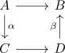
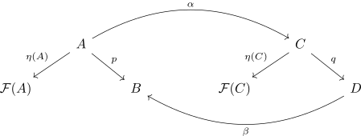
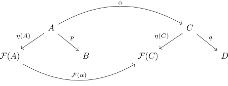
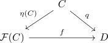
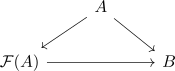

endofunctor with natural transformation and hom functor of coslice determines functor from twisted arrows
Proposition
Let $\mathcal{C}$ be a category, $\mathrm{Tw}(\mathcal{C})$ the twisted arrow category, $\mathcal{F}: \mathcal{C} \rightarrow \mathcal{C}$ a functor with a natural transformation $\eta: \mathrm{id}_{\mathcal{C}} \rightarrow \mathcal{F}$ Let $\mathrm{Hom}_{A / \mathcal{C}}(-,-)$ be the hom-functor of the coslice category $A/ \mathcal{C}$ for an object $A$.
Then there exists a covariant functor
Proof
Let $p: A \rightarrow B, q: C \rightarrow D$ be objects in $\mathrm{Tw}(\mathcal{C})$ and

a morphism $(C \rightarrow D) \rightarrow (A \rightarrow B)$
Then we get a commutative diagram

in $\mathcal{C}$ and using naturality of $\eta$ also

Then precomposition with $\mathcal{F}(\alpha): \mathcal{F}(A) \rightarrow \mathcal{F}(C)$ and postcomposition with $\beta$ gives a map
It remains to show that those morphisms are also morphisms in the coslice category, i.e. given an $f: \mathcal{F}(C) \rightarrow D$ such that

commutes, then the resulting morphism

results in a commutative digaram